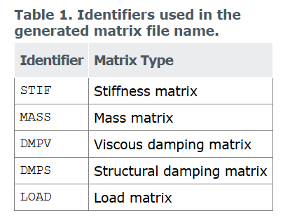

目录
Abaqus 输出总体刚度矩阵
abaqus 可以输出模型的刚度/质量/阻尼/载荷矩阵等:
- 输出单元刚度矩阵
- 输出范围可以是一个单元,也可以是多个单元
- 输出总体刚度矩阵
- 输出的数据是整个模型的刚度矩阵,或者是某一特定区域的总体刚度矩阵,可以考虑MPC约束,声学等效应.
输出总体刚度矩阵
abaqus输出总体刚度矩阵主要用到Matrix Gernerate分析步,关键字为:*MATRIX GENERATE.
- 是线性摄动过程;
- 如果分析中包含非线性几何效应,则包括由于预载荷和初始条件引起的初始应力和负载刚度效应;
- 对有限元模型进行数学抽象,根据网格和材料信息,通过生成全局或单元矩阵表示刚度,质量,粘性阻尼,结构阻尼和模型中的载荷矢量;
- 可以将矩阵数据输出到文本文件中,或二进制文件sim
matrix generation procedure是一个线性摄动过程,所以输出的矩阵都是基于前面所有分析步结束后的状态时间点.另外,abaqus也允许在matrix generation procedure中设定新的边界条件,加载,预定义场等.(这时输出的矩阵是基于Matrix Generation procedure结束后的状态.)
abaqus 会使用SIM(高性能数据库)生成矩阵,并把矩阵数据存在jobname_Xn.sim文件中.
jobname is the name of job, and n is the number of the Abaqus step that generates the matrices.
指定输出什么矩阵
以下关键字告诉abaqus要输出:刚度矩阵,质量矩阵,粘性阻尼矩阵,结构阻尼矩阵和模型中的载荷矩阵.
*MATRIX GENERATE, STIFFNESS, MASS, VISCOUS DAMPING, STRUCTURE DAMPING, LOAD注意的是,LOAD MATRIX是根据matrix generation step中定义的load case生成的nodal load matrix.一个load case 可以包括 distributed loads, concentrated nodal loads, thermal expansion, and load cases defined for any substructures that may be used as part of the model.
是否输出单元形式矩阵
默认情况下生成的矩阵是全局装配形式的,已经由局部单元矩阵和matrix input data 组装完成.但abaqus 提供了一个选项,可以申城 element-by-element form的全局矩阵.**Instead of global (assembled) matrices, local element matrices are generated.**开启这个option后,abaqus在生成矩阵过程中会忽略matrix input data.
*MATRIX GENERATE, ELEMENT BY ELEMENT为部分模型生成矩阵
abaqus 默认会生成整个模型的矩阵,但也可以只生成部分模型的矩阵.
MATRIX GENERATE, ELSET=element set name默认下,abaqus生成矩阵会考虑matrix input data 和finite element model的贡献. source 选项可以指定.
** default
*MATRIX GENERATE, SOURCE=ALL
**including only contributions from the finite elements
*MATRIX GENERATE, SOURCE=ELEMENTS
**including only contributions from the matrix input data
*MATRIX GENERATE, SOURCE=MATRIX INPUT 默认情况下,abaqus会为模型的结构部分和声学部分生成矩阵.这也是可以控制的,但abaqus/standard不支持在matrix usage model中生成包含声学自由度的矩阵.详情可见 Using matrices
**(default)
**generate matrices for the structural and acoustic parts of the model
*MATRIX GENERATE, FIELD=ALL
**generate matrices for the structural part of the model only
*MATRIX GENERATE, FIELD=STRUCTURAL
**generate matrices for the acoustic part of the model only
*MATRIX GENERATE, FIELD=ACOUSTIC 频率相关材料/MPC约束/公共点等
如果在材料属性中定义了频率相关的材料行为,abaqus生成矩阵时可以在指定频率计算材料属性,默认设置是在0Hz处计算材料属性,并且不考虑频率域粘弹性的贡献.
*MATRIX GENERATE, PROPERTY EVALUATION=frequency默认情况下考虑MPC约束的贡献,但abaqus生成的矩阵只包括独立节点的自由度,受约束节点的自由度忽略了.
** default
**generate the matrices with applied multipoint constraints
*MATRIX GENERATE, MPC=YES
** skip the multipoint constraints during the matrix generation
*MATRIX GENERATE, MPC=NO 关于公共节点,我也不清楚,有待进一步研究.
关于初始条件/边界条件/载荷/预定义场/材料选项/单元
只写重要的结论,详细去看文档
- initial conditions
矩阵生成是一个线性摄动过程.因此,矩阵生成步骤的初始状态就是最后一个一般分析步结束时模型的状态.
- Boundary conditions
在matrix generation step中,可以定义新的边界条件,但不会后续的general analysis step中使用(除非被重新定义)
- Loads
在matrix generation step中,所有类型的LOADs都可以用在load case中,但不会后续的general analysis step中使用(除非被重新定义)
- Predefined fields
All types of predefined fields can be specified in a matrix generation procedure.同样,这些字段不会被后续的general analysis step中使用(除非被重新定义)
- Material options
能够用在Standard的材料选项,都可以用在这个分析步
- elements
能够用在Standard的单元类型,都可以用在这个分析步.但是需要注意的是:
Solid continuum infinite elements (CIN-type elements) 在静力,动力分析中有不同的formula.因此如果模型有这种单元,需要指定使用哪种formula.
** select the dynamic formulation for solid infinite elements
*MATRIX GENERATE, SOLID INFINITE FORMULATION=DYNAMIC
**select the static formulation for solid infinite elements
*MATRIX GENERATE, SOLID INFINITE FORMULATION=STATIC输出矩阵的格式
使用*MATRIX OUTPUT命令可以指定输出到文件的矩阵类型.
** Use the following option to output the stiffness matrix
*MATRIX OUTPUT, STIFFNESS
**Use the following option to output the mass matrix:
*MATRIX OUTPUT, MASS
**Use the following option to output the viscous damping matrix:
*MATRIX OUTPUT, VISCOUS DAMPING
**Use the following option to output the structural damping matrix:
*MATRIX OUTPUT, STRUCTURAL DAMPING
**Use the following option to output the load matrix:
*MATRIX OUTPUT, LOADabaqus支持输出矩阵到xx.sim文件和xx.mtx文件中,后者是文本文件,可以用文本编辑器打开查看.矩阵从xx.sim输出到xx.mtx时文件名称为: jobname_matrixN.mtx,其中N是matrix generation step的编号,matrix是表示矩阵类型的四个字母标识符.

abaqus 输出的文件内容格式有6种(后三种暂时用不到,不写):
- Matrix input text format
这是默认的文件格式, 使用和STANDRAD相同的矩阵定义技术.这种格式不会将Abaqus node labels转换,负数或0可能作为internal node labels输出到文件中.
*MATRIX OUTPUT, FORMAT=MATRIX INPUTFormat of the operator matrix
ABAQUS会将将稀疏矩阵数据转换成一系列逗号分隔的列表写入文本文件.在刚度,质量,阻尼矩阵文件中,一行会有5项数据,分别是:Row node label, Degree of freedom for row node,Column node label,Degree of freedom for column node,Matrix entry.
<!-- Example of matrix input text format -->
<!-- 这是twoElem_outMatrix_STIF1.mtx文件的部分内容 -->
1,1, 1,1, 7.966023675518204e+05
1,2, 1,1, 2.524038461538461e+05
1,3, 1,1, -4.574819711538461e+05
2,1, 1,1, 5.754108328979316e+05
2,2, 1,1, -5.048076923076921e+04
2,3, 1,1, -4.574819711538461e+05
3,1, 1,1, 8.216258397551760e+04
3,2, 1,1, 2.524038461538461e+05
3,3, 1,1, 9.149639423076922e+04
4,1, 1,1, -1.319053129612497e+05
4,2, 1,1, -5.048076923076921e+04
4,3, 1,1, 9.149639423076922e+04
5,1, 1,1, 1.301244035319694e+05
5,2, 1,1, 5.048076923076919e+04
5,3, 1,1, -9.149639423076922e+04
6,1, 1,1, -8.394349340479798e+04Format of the load matrix
Nonzero entries in load matrices, which represent right-hand-side vector data, are written to the text file as a comma-separated list .每一行数据有3项: Node label,Degree of freedom,Right-hand-side vector entry
The format of the load vectors and heading labels是基于关键字的,每一个load vector使用下面 的heading来标识load的实部虚部:
*CLOAD, REAL
*CLOAD, IMAGINARY如果matrix generation step中定义多个load case,在文本文件中,每个load case的load vector会用如下的标识来标记:
*LOAD CASE
…
*END LOAD CASE- Labeling text format
这种format和matrix input text format类似,但唯一不同的就是: 内部Abaqus节点标签被转换成Abaqus矩阵输入数据可以接受的大正数.如果生成的矩阵被用来standard分析,那么这种format内所有的节点label都会被认为是用户自定义的节点.
*MATRIX OUTPUT, FORMAT=LABELS- Coordinate text format
这种format直观,而且容易输入到其他数学软件.文件中的每一行对应于一个矩阵项,每一行有3个值: 矩阵的行号,列号,矩阵值.并且这是已经组装完成的矩阵
<!-- Example of Coordinate text format -->
<!-- 这是twoElem_outMatrix_STIF1.mtx文件的部分内容 -->
1 1 7.966023675518204e+05
1 2 2.524038461538461e+05
2 1 2.524038461538461e+05
1 3 -4.574819711538461e+05
3 1 -4.574819711538461e+05
1 4 5.754108328979316e+05
4 1 5.754108328979316e+05
1 5 -5.048076923076921e+04
5 1 -5.048076923076921e+04
1 6 -4.574819711538461e+05
6 1 -4.574819711538461e+05
1 7 8.216258397551760e+04
7 1 8.216258397551760e+04
1 8 2.524038461538461e+05
8 1 2.524038461538461e+05
1 9 9.149639423076922e+04
9 1 9.149639423076922e+04
1 10 -1.319053129612497e+05
10 1 -1.319053129612497e+05
1 11 -5.048076923076921e+04对于load matrix,每一行有2项:Equation (row) number,Right-hand-side vector entry
Commented load case options are written to the output file to indicate the load cases
*MATRIX OUTPUT, FORMAT=COORDINATETemplate input file
*Heading
** Job name: twoElem_outMatrix Model name: Model-oneELEM
** Generated by: Abaqus/CAE 2023
*Preprint, echo=NO, model=NO, history=NO, contact=NO
**
** PARTS
**
*Part, name=Part-1
*Node
1, -37.5, -30., 20.
2, -37.5, 6.25, 20.
3, -37.5, -30., 0.
4, -37.5, 6.25, 0.
5, 1.25, -30., 20.
6, 1.25, 6.25, 20.
7, 1.25, -30., 0.
8, 1.25, 6.25, 0.
9, 40., -30., 20.
10, 40., 6.25, 20.
11, 40., -30., 0.
12, 40., 6.25, 0.
*Element, type=C3D8R
1, 5, 6, 8, 7, 1, 2, 4, 3
2, 9, 10, 12, 11, 5, 6, 8, 7
*Nset, nset=Set-3, generate
1, 12, 1
*Elset, elset=Set-3
1, 2
** Section: Section-1
*Solid Section, elset=Set-3, material=steel
,
*End Part
**
**
** ASSEMBLY
**
*Assembly, name=Assembly
**
*Instance, name=Part-1-1, part=Part-1
*End Instance
**
*Nset, nset=Set-1, instance=Part-1-1, generate
9, 12, 1
*Elset, elset=Set-1, instance=Part-1-1
2,
*End Assembly
**
** MATERIALS
**
*Material, name=steel
*Density
1.6e-09,
*Elastic
210000., 0.3
** ----------------------------------------------------------------
**
** STEP: Step-1
**
*Step
*MATRIX GENERATE, STIFFNESS,MASS,LOAD
*MATRIX OUTPUT, STIFFNESS, MASS, LOAD, FORMAT=COORDINATE
**
** BOUNDARY CONDITIONS
**
** Name: BC-1 Type: Symmetry/Antisymmetry/Encastre
*Boundary
Set-1, ENCASTRE
**
** OUTPUT REQUESTS
**
**
** FIELD OUTPUT: F-Output-1
**
** *Output, field, variable=PRESELECT
** **
** ** HISTORY OUTPUT: H-Output-1
** **
** *Output, history, variable=PRESELECT
*End Step
- DMIG format
- User element format
- Outputting matrices in element-by-element form